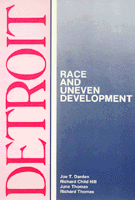

Examining the genesis of modern Detroit as a hub of wealth and poverty
Examining the genesis of modern Detroit as a hub of wealth and poverty


 Examining the genesis of modern Detroit as a hub of wealth and poverty
Examining the genesis of modern Detroit as a hub of wealth and poverty

|  |
DetroitRace and Uneven DevelopmentJoe T. Darden, Richard Child Hill, June Thomas and Richard Thomaspaper EAN: 978-0-87722-776-2 (ISBN: 0-87722-776-4) |
"Anyone interested in urban economic development, the politics of economic development, and American race relations will find [in this book] a fascinating and careful analysis of Detroit's rise, fall, and ongoing comeback struggle.... of particular interest to urban planners and researchers concerned with urban decline in North America and Western Europe."
—Urban Studies
Hub of the American auto industry and site of the celebrated Riverfront Renaissance, Detroit is also a city of extraordinary poverty, unemployment, and racial segregation. This duality in one of the mightiest industrial metropolises of twentieth-century North America is the focus of this study. Viewing the Motor City in light of sociology, geography, history, and planning, the authors examine the genesis of modern Detroit. They argue that the current situation of metropolitan Detroit—economic decentralization, chronic racial and class segregation, regional political fragmentation—is a logical result of trends that have gradually escalated throughout the post-World War II era. Examining its recent redevelopment policies and the ensuing political conflicts, Darden, Hill, Thomas, and Thomas, discuss where Detroit has been and where it is going.
Excerpt available at www.temple.edu/tempress
"Detroit is a wonderfully thorough compendium of urban inequality. It should quickly establish itself as the definitive study for Detroit-area planners and policy makers. For teachers and students in the Detroit metropolitan region, this book will prove invaluable as a reference text. The quantitative data are presented with minimal, but appropriate, statistical analysis, helpful maps, and well-organized tables. The case studies of struggles for school and housing integration make up some of the most readable sections of the book and power structure research methods are used to shed new light on such development projects as the Renaissance Center."
—Contemporary Sociology
"The book offers fine treatments of the rise of black political power, of the efforts to rejuvenate downtown and the waterfront, and of the debt of the city in efforts to acquire new industrial and service-oriented development. Overall, Detroit ably achieves the goals of the series. The perspective is truly interdisciplinary, reflecting the authors� backgrounds. It is a thoroughly enjoyable geography, in the best sense of the word, of the Detroit metropolitan region."
—Geographical Reviews
List of Maps, Figures, and Tables
Preface: Angles of Vision
Series Preface
1. Detroit: An Overview
2. Uneven Development in Metropolitan Detroit
The Motor City •
One Detroit, Two Detroits, Many Detroits •
Coming Full Circle: Renaissance On The Riverfront •
Conclusion
3. Patterns of Race and Class Disparity
Patterns of Race •
Black Protest •
Racial Disparity in Social and Economic Life •
The Pattern of Race within Detroit, 1940-1980 •
The Spatial Distribution of Blacks and Housing Costs, 1960-1980 •
The Consequences of Racial Segregation •
Differential Patterns of Racial Mobility in the Suburbs •
Patterns of Class •
Conclusion
4. Interracial Conflict and Cooperation: Housing as a Case Study
The Emerging Conflict •
Building Barricades vs. Welcoming the Strangers •
Building an Interracial Movement for Fair Housing •
Suburban Resistance to HUD •
Maintaining The Struggle and the Dream •
Conclusion
5. City Redevelopment Policies
The Detroit Plan and the Problem of Slums •
Slum Clearance Through Urban Renewal •
Balancing Redevelopment Resources •
Conclusion
6. Politics and Policy in Metropolitan Detroit
Black Political Power in Detroit •
Metropolitan School Desegregation: A Policy Issue •
Toward Metropolitan Cooperation •
Conclusion
7. What Future for Detroit?
Uneven Development •
Patterns of Race and Class •
Redevelopment Policies •
Interracial Conflict and Cooperation •
Regional Politics •
Guideposts for the Future
Notes
Index
Joe T. Darden is Dean of Urban Affairs and Professor of Geography and Urban Affairs at Michigan State University.
Richard Child Hill is Professor of Sociology and Urban Affairs at Michigan State University.
June Thomas is Associate Professor of Urban Planning and Urban Affairs at Michigan State University.
Richard Thomas is Associate Professor of History and Urban Affairs at Michigan State University.
Urban Studies
African American Studies
Sociology
Comparative American Cities, edited by Joe T. Darden.
No longer active.
© 2015 Temple University. All Rights Reserved. This page: http://www.temple.edu/tempress/titles/507_reg.html.